Prerequisite – Dynamic Host Configuration Protocol (DHCP), How DHCP server dynamically assigns IP address to a host?
To assign an IP address to the host dynamically, DHCP client exchange DHCP messages with DHCP server in DORA process.
In DORA process, the discover and request message is broadcast, the offer and the acknowledgement message is broadcast or unicast depending upon the value of broadcast flag i.e. If the value of broadcast flag is 1,then the offer and acknowledgement message is broadcast and if 0,the messages are unicast. But this is valid only when the DHCP server is present in the same network because the router doesn’t forward any broadcast packet. What if the server is present in a different network? Here comes the role of DHCP relay agent.
DHCP Relay Agent –
DHCP relay agent is any TCP/IP host which is used to forward request and replies between DHCP server and client when the server is present on the different network. Relay agents receive DHCP messages and then generate a new DHCP message to send out on another INTERFACE. Also, DHCP relay agent adds a giaddr (gateway address of packet) field and also the Relay agent information option 82 if enabled. The option field is removed when the server reply is forwarded to the host.
Note – The discover and request messages are unicast by the DHCP relay agent.
Example –
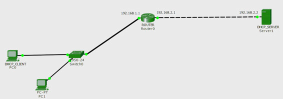
Here is a topology in which there is a DHCP client having no IP address. There is a DHCP server having IP address 192.168.2.2 and there is a router in middle which we wants as DHCP relay agent has an IP address 192.168.1.1 on interface fa0/0 and 192.168.2.1 on interface fa0/1.
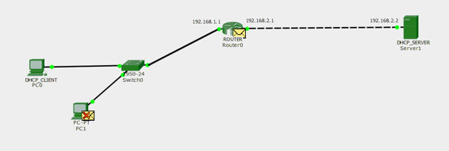
Now, first the discover message is broadcast by the DHCP client to find out the DHCP server which is received by the swiitch as it is in the same braodcast domain.The switch broadcast the dhcp packet in the network ,recieved by both PC and Router(DHCP Relay Agent).The PC and the router recieves the broadcast packet but the PC drops the packet as the DHCP server is present in the different network therefore the packet has to delivered to the default gateway only.
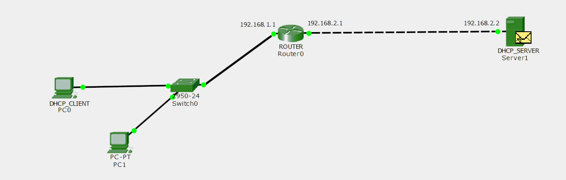
The router ,with DHCP relay agent feature enabled,replaces the source address with its own address and the destination IP address with DHCP server IP address i.e. the DHCP relay agent unicast the packet to DHCP server. DHCP relay agent adds giaddr field into the packet and forward it to the DHCP server. giaddr field is added to the packet so that the server should know from which pool, it has to assign the IP address.
In our case, the giaddr field will contain 192.168.1.1 (IP address of the interface on which the router [DHCP relay agent] receives the discover message).
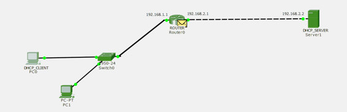
The server replies with a unicast DHCP offer to the router offering the unleashed IP address.
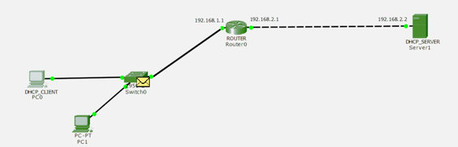
In return, the router broadcast the DHCP Offer message to the network which has send the DHCP request.The broadcast message is recieved by switch as shown in the above figure.
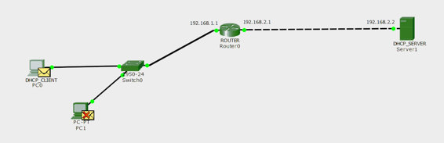
The switch broadcasts the DHCP offer message to the hosts. Therefore,the message is recieved by DHCP client
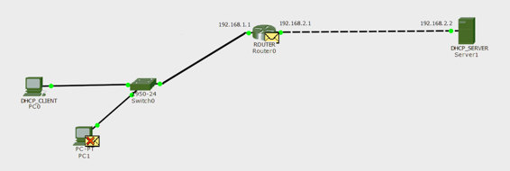
Now, the dhcp client broadcast the dhcp request message, showing the acceptance of the IP address, for the server which is received by the switch.The switch broadcast the DHCP request message to the other host and the router(DHCP Relay Agent)as shown in the above figure.
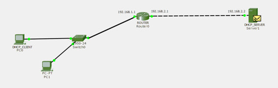
The router replaces the source IP address with its own IP address and destination IP remains the same i.e. It is unicast by the dhcp relay agent
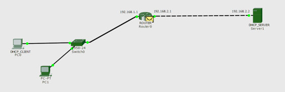
The server replies with a unicast DHCP Acknowledgement message to the router (DHCP relay agent) as shown in the above figure.
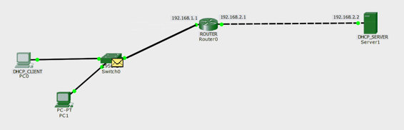
The router in turn broadcast the DHCP Acknowledgement message to the network it recieves the DHCP request for an IP address.The broadcast message is recieved by switch as shown in the above figure.
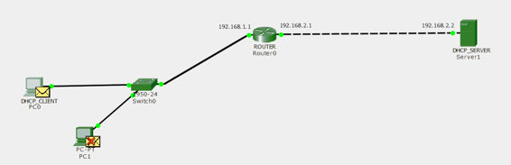
The broadcast DHCP Acknowledgement message is recieved by the DHCP client as the switch broadcast the message through all its ports.
Configuration –
This is the basic configuration of the client, router, dhcp_server.The router has been assign IP address 192.168.1.1 on fa0/0 and 192.168.2.1 on fa0/1.
ROUTER(config)#int f0/0 ROUTER(config-if)#ip address 192.168.1.1 255.255.255.0 ROUTER(config-if)#no shutdown ROUTER(config)#int f0/1 ROUTER(config-if)#ip address 192.168.2.1 255.255.255.0 ROUTER(config-if)#no shutdown
The DHCP_SERVER is assigned IP Address 192.168.2.2 on the interface fa0/0 and the DHCP pool is defined with name POOL1 and network of 192.168.1.0 with subnet mask 255.255.255.0 is assigned to the pool POOL1.
DHCP_SERVER(config)#int f0/0 DHCP_SERVER(config-if)#ip address 192.168.2.2 255.255.255.0 DHCP_SERVER(config-if)#no shutdown DHCP_SERVER(config)#ip dhcp pool POOL1 DHCP_SERVER(dhcp-config)#network 192.168.1.0 255.255.255.0 DHCP_SERVER(dhcp-config)#default-router 192.168.1.1 DHCP_SERVER(dhcp-config)#exit
Now, the ip helper address command is used for configuring the router as a dhcp relay agent, giving 192.168.2.2 the address of DHCP_server.
ROUTER(config)#int f0/0 ROUTER(config-if)#ip helper-address 192.168.2.2 ROUTER(config-if)#exit